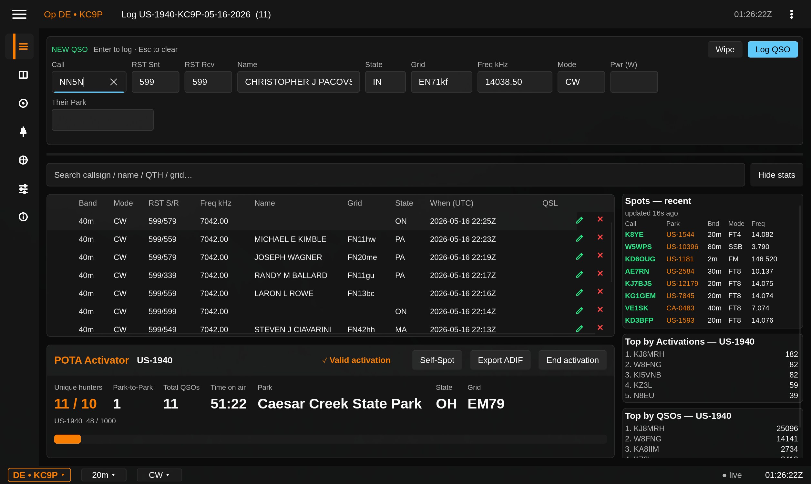

Contacts. Contests. A lifetime in radio. Cross-platform ham software built with the same care you put into the rig sitting in your shack.
A cross-platform amateur radio logger with a polished GUI and a first-class TUI — sharing one Rust core, one logbook, one design language.
A modern, fast, open replacement for the repeater book — searchable from desktop, web, and your HT.
Tune the bands from any browser, anywhere — without the geocities-era UI that's plagued WebSDR for two decades.
The amateur radio software market hasn't moved in twenty years. Most tools are Windows-only, stuck in a Win95 visual era, and feel like they were written for an operator who quit the hobby in 2003. QSO Forge exists because hams deserve better.
We build software with the same engineering discipline and material quality as the radios on your bench — cross-platform from day one, fast, keyboard-first, and good-looking on every surface. Ham radio software built like racing hardware.
Damascus is free during the v0.x betas. Download for any major platform.
A modern, cross-platform ham radio logging application.
A polished Slint desktop GUI AND a first-class ratatui TUI — same Rust core, same logbook, identical reflow rules. Pick the surface you want.
Peer-to-peer multi-station sync over flaky field wifi. Op-log + hybrid logical clock means no QSOs lost when the generator hiccups.
Dark theme that respects your eyes, papaya and green accents tuned for low-light shacks, tabular monospace for everything that compares. No Windows-95 vibes.

Real Damascus session · POTA activation at US-1940 · 40m CW
Single-line entry strip with callsign-lookup-as-you-type (QRZ, HamQTH, Callook), DXCC and prior-QSO flags, auto-populated grid. Fully remappable hotkeys.
One Master Log plus unlimited contest, POTA, and custom logbooks. Non-destructive merge-to-Master with preview. Selective LoTW / QRZ / eQSL upload — no double-uploads, ever.
Built-in ARRL Field Day, Winter Field Day, NAQP. Exchange validation, scoring, rolling rate meter (10m / 60m), Run vs S&P, multi-op aware out of the box.
Field Day-grade. Op-log + hybrid logical clock, mesh relay between stations, no central server. Same-band / same-mode collision warnings per contest rules.
Per-activation logbooks, n-fer support, auto MY_SIG_INFO, live activation stats (P2P count, progress to 10), one-click POTA-formatted ADIF export.
Native plugins for Yaesu FTDX-10, Icom IC-7610 / IC-7300, Elecraft K4 — plus a Hamlib bridge for hundreds more rigs. Read and set frequency, mode, band, VFO, split, and live TX power where the rig reports it.
Pure-Rust certificate signing. No TQSL dependency. Identical behavior on Windows, macOS, and Linux. Confirmations downloaded via the LoTW report API.
Built-in cluster client, per-cluster filters, click-to-tune sends frequency to the active radio. Spots feed the POTA Hunter workspace and pre-warm the callsign cache.
UDP feed support. FT8 / FT4 QSOs auto-route to the active logbook with full ADIF fidelity. No copy-paste, no second logger.
All releases are signed and published to GitHub Releases. Pick the package that matches your OS.
Go to GitHub ReleasesRepeaterbook is showing its age. Tensile is a modern, fast, open repeater directory — searchable from your desktop logger, from any browser, and from your HT via QR. Crowdsourced, geo-aware, and built on open data.
Tune HF from any browser, anywhere — without the geocities-era UI. Built on the same design language as Damascus, with first-class spectrum and waterfall controls that don't fight you.
Amateur radio is a hundred-year-old craft. The software hasn't kept up. Most of the loggers, cluster clients, and field tools operators rely on look — and feel — like they were last revised when 56k modems were modern. We can do better. We have to.
QSO Forge builds tools that are as carefully engineered as the radios sitting in our shacks. Cross-platform, modern, opinionated, and priced fairly. Proprietary where it lets us move faster, open at the formats that matter (ADIF, Cabrillo, your data). Built by hams, for hams, with a stubborn refusal to ship anything that looks like it came out of 1998.
We're a small operation. That's the point. Every line of code is written with the operator in front of the radio in mind — at 0300Z, contest night, generator humming, coffee cold.